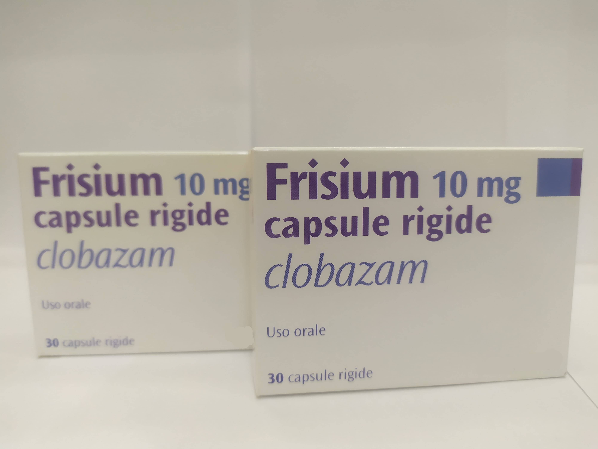

Контактная информация:
Цена: 550 грн/уп.
В наличии
Производитель: Италия
Цена: 550 грн/уп.
В наличии
Именно в FarmItal вы можете купить фризиум,фрисиум,frisium капсулы 10мг в Украине, Гарантированно Качественный!
Доставка Frisium осуществляется транспортными компаниями, сроки выполнения заказа оговариваются менеджером Фармитал. Вы можете заказать Фризиум в городах: Одесса, Херсон, Чернигов, Северодонецк, Бердянск, Бровары, Днепр, Винница, Киев, Славянск, Полтава, Краматорск, Белая Церковь, Каменское, Мариуполь, Черновцы, Александрия, Каменец- Подольский, Львов, Запорожье, Кропивницкий, Житомир, Ивано-Франковск, Сумы, Черкассы, Константиновка, Мелитополь, Кривой Рог, Ровно, Луцк, Никополь, Павлоград, Ужгород, Кременчуг, Лисичанск, Хмельницкий, Тернополь, Харьков, Николаев, а также других населенных пунктах Украины.
Капсулы.
Показаниями к применению препарата Фризиум являются: неврозы, психопатии, сопровождающиеся тревогой, возбуждением, напряженностью, повышенной раздражительностью, бессонницей, органные неврозы, мигрень, климактерические расстройства, эпилепсия (как дополнительное средство в комбинации с противосудорожными препаратами).
Противопоказаниями к применению препарата Фризиум: миастения, беременность (первый триместр), лактация, детский возраст (до 3 лет), выраженные нарушения функции печени, нарушения дыхания во время сна, дыхательная недостаточность, спинальная и мозжечковая атаксия; острые отравления алкоголем, снотворными, обезболивающими, нейролептиками, антидепрессантами, солями лития; повышенная чувствительность к бензодиазепинам.
Начальная суточная доза препарата Фризиум составляет 20 мг. При хорошей переносимости дозу препарата увеличивают до 30 мг/сут. В условиях стационара возможно дальнейшее увеличение дозы до 100 мг/сут. Дозу до 30 мг можно применять однократно вечером. Дозу более 30 мг следует разделить на несколько приемов, причем большую часть дозы следует принимать вечером. Оптимальный эффект достигается через 2-4 нед. курсовой терапии. Длительные периоды непрерывного лечения (более 4 недель) следует избегать.
Самолечение может быть вредным для вашего здоровья! Перед началом лечения обратитесь к вашему врачу!!
При применении препарата Фризиум возможно возникновение таких побочных действий, как ощущение усталости, нарушение концентрации внимания, замедление психических и двигательных реакций, сонливость. , спутанность сознания, головокружение, головная боль, бронхоспазм, нарушение функции дыхания у больных с поражением центральной нервной системы, аллергические реакции. При применении высоких доз возможны нарушения речи, диплопия, нистагм, увеличение массы тела, снижение либидо, нарушение менструального цикла. При лечении эпилепсии – беспокойство, мышечная слабость.
Активное вещество препарата Фризиум – клобазам.
Хранить в недоступном для детей месте.